PyCharm es un editor de Python muy potente y multiplataforma. Dado que actualmente hay pocos tutoriales sobre la última versión de PyCharm, para ahorrar tiempo, presentaré cómo instalar PyCharm en Windows.
Esta es la dirección de descarga de PyCharm:http://www.jetbrains.com/pycharm/download/#section=windows
Tutorial de PyCharm:https://www.runoob.com/pycharm/pycharm-tutorial.html
Después de entrar en el sitio web, veremos la siguiente interfaz:
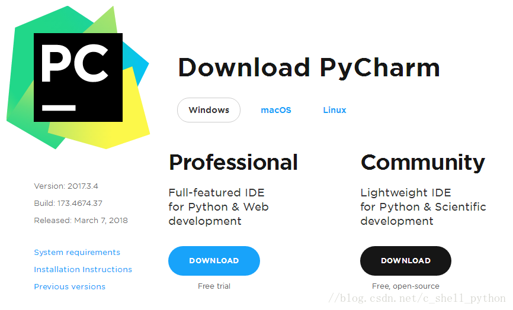
professional indica la versión profesional, community es la versión comunitaria. Se recomienda instalar la versión comunitaria, porque es gratuita.
1. Cuando se haya descargado, haga clic en instalar. Recuerde modificar la ruta de instalación; aquí la puse en la unidad E. Después de modificarla, Next.
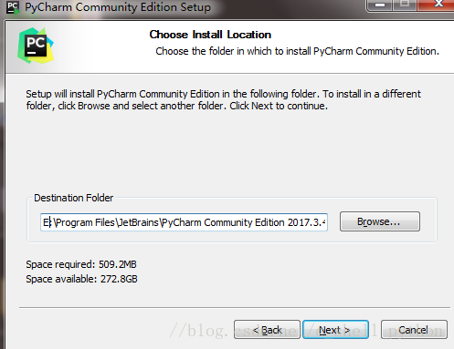
2. A continuación,
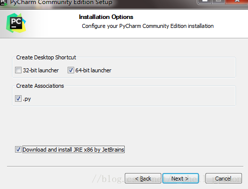
Podemos elegir entre 32 o 64 bits según nuestro ordenador; actualmente los sistemas deberían ser en su mayoría de 64 bits, ¿verdad?
3. Como se muestra a continuación:
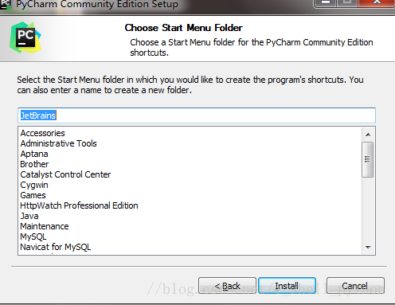
Haga clic en Install y luego espere tranquilamente la instalación. Si no hemos descargado previamente el intérprete de Python, durante la espera tendremos que descargar el intérprete de Python, de lo contrario PyCharm será solo un cascarón sin alma.
4. Entrar en el sitio web oficial de Python: //www.python.org/
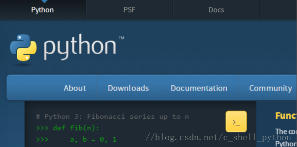
Haga clic en Downloads para entrar en la interfaz de selección de descarga.
5. Como se muestra a continuación, elija el número de versión de Python que necesitemos y haga clic en Download.
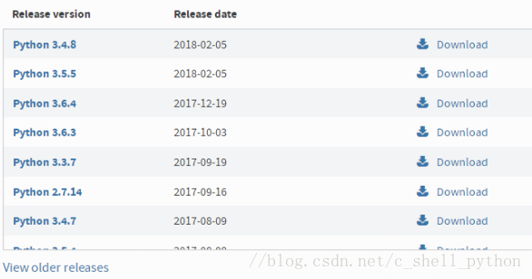
6. Yo elegí Python 3.5.1; se verá la siguiente interfaz.
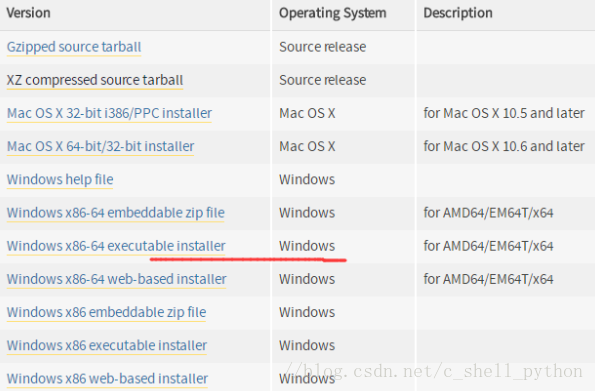
Como necesitamos el intérprete para Windows, en 'Operating System' podemos elegir la versión correspondiente de Windows; hay versión de 64 y 32 bits. Yo elegí la señalada con la línea roja. 'executable' indica la versión ejecutable, que requiere instalación antes de usarse; 'embeddable' indica la versión incrustable, es decir, la versión que se puede usar después de descomprimir.
La instalación de la versión ejecutable es relativamente sencilla; basta con dejar los valores predeterminados. Con embeddable hay que tener cuidado: cuando descomprimamos...Este también debe descomprimirse en la misma ruta; aquí se encuentran herramientas como pip, setuptools, etc. Si no lo descomprimimos, no podremos actualizar módulos en PyCharm; por ejemplo, si necesitamos pymysql, no podremos descargarlo. Aunque puede funcionar, sería un intérprete de Python 'recortado'.
Si es la versión embeddable, recuerde añadir la ruta del intérprete a las variables de entorno; de lo contrario, PyCharm no podrá obtener automáticamente la ubicación del intérprete.
7. Agregar variables de entorno
(1) Haga clic derecho en 'Mi PC', haga clic en 'Propiedades' y aparecerá la siguiente interfaz.
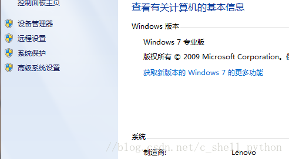
(2) Haga clic en 'Configuración avanzada del sistema' y aparecerá la siguiente figura.
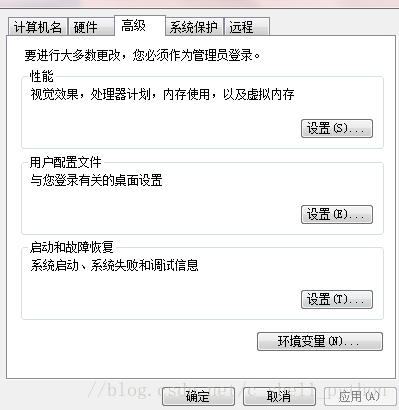
(3) Haga clic en 'Variables de entorno'.
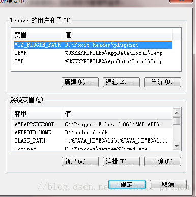
(4) Busque 'Path' dentro de las variables del sistema, edítelo, pegue la ruta donde se encuentra el intérprete de Python al final y agregue un punto y coma.
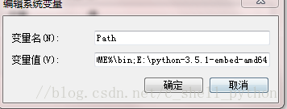
Configuración de variables de entorno finalizada.
8. Para entonces PyCharm ya está instalado; entremos en el software.
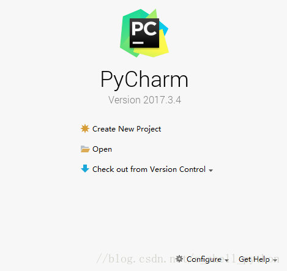
9. Haga clic en 'Create New Project'; lo siguiente es importante.
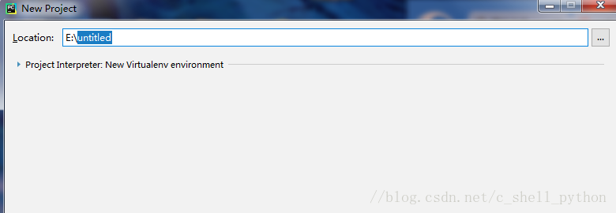
'Location' es la ruta donde guardamos el proyecto. Haga clic en
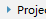
este símbolo de triángulo; se puede ver que PyCharm ha obtenido automáticamente Python 3.5.
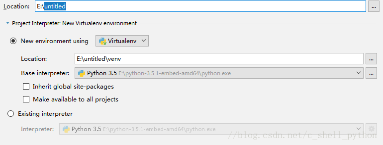
Haga clic en el primero.
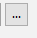
Podemos elegir la ruta de Location, por ejemplo:
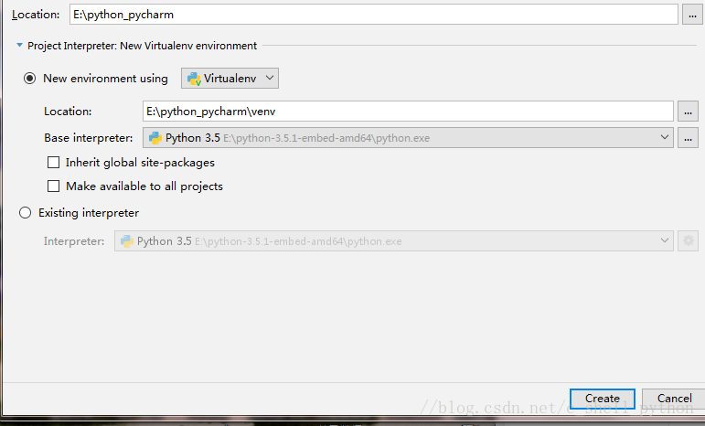
Recuerde que la ruta que elijamos debe estar vacía, de lo contrario no se puede crear. El segundo Location no hay que tocarlo, es el predeterminado automático; no haga clic en el resto y luego haga clic en 'Create'. Aparece la siguiente interfaz: PyCharm está configurando el entorno; espere tranquilamente. Finalmente, haga clic en 'close' para cerrar el aviso y listo.
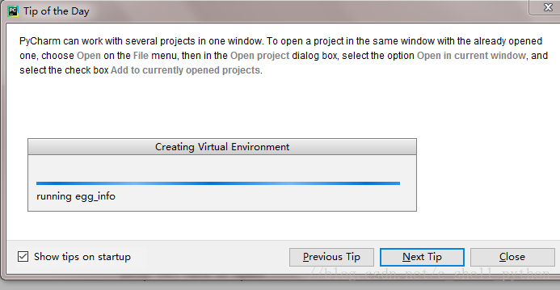
10. Crear el entorno de compilación
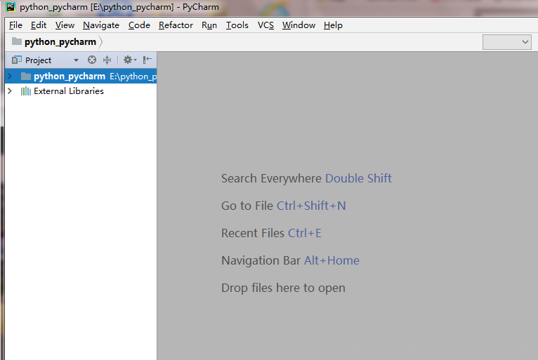
Clic derecho
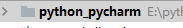
Haga clic en 'New' y seleccione 'Python File'.
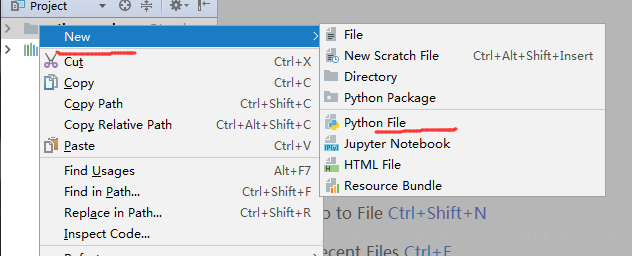
Ponga un nombre al archivo y haga clic en 'OK'.
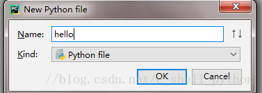
El sistema generará por defecto 'hello.py'.
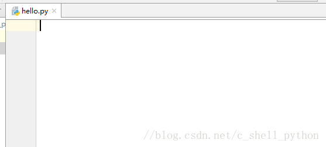
Bien, hasta aquí, nuestro trabajo inicial está básicamente completo.
11. Vamos a compilar
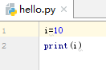
Atajo Ctrl+Shift+F10 o haga clic enel triángulo verde, entonces compilará. El resultado de la compilación es el siguiente:
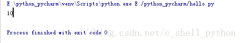
12. Ah, por cierto, como yo ya lo había agregado antes, puedo compilar directamente. Pero falta un paso muy importante que no he mencionado; de lo contrario, PyCharm no puede encontrar el intérprete y no podrá compilar.
Haga clic en 'File', seleccione 'Settings', haga clic en
Agregar intérprete
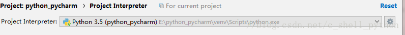
Finalmente, haga clic en 'Apply'. Espere la configuración del sistema.
Si necesitamos agregar un nuevo módulo, haga clic en el signo + verde.
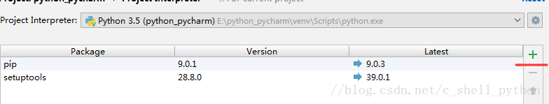
Luego busque directamente 'pymysql'.
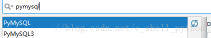
Luego haga clic en instalar.
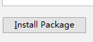
Lo anterior es el proceso de instalación e inicialización de PyCharm, así como la instalación y configuración del intérprete de Python.
Enlace original: https://blog.csdn.net/c_shell_python/article/details/79647627